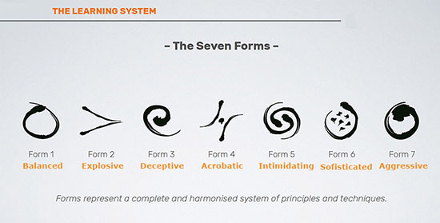

Formas de combate
Forma I
Forma de combate estable, sólida y versátil. Su visión simple del combate despliega un amplio catálogo ordenado de técnicas ofensivas y defensivas. A través de la Forma I tomas consciencia del movimiento de cuerpo y sable, así como de tu rango de acción.
Forma II
Elegante, explosivo y letal. Conviértete en un esgrimista elegante y eficiente mientas tus oponentes intentan salir sin éxito de tu punto de mira. Las terroríficas técnicas ofensivas frontales de Forma II se convertirán en la pesadilla de tus adversarios.
Forma III
Una Forma de Combate paciente que cocina la victoria a fuego lento. Sumiremos al adversario en una trampa perceptiva que le hará precipitarse a su derrota sin saber cómo ni cuándo ha ocurrido.
Forma IV
Tu sable manda, tomará el liderazgo y tú obedecerás para ayudarle a cumplir su cometido. En Forma IV el cuerpo no podrá ser un impedimento en este “danza con el arma” que retará las leyes de la física.
Forma V
Poderosa, agresiva y dominante. El carácter altivo de Forma V someterá al rival a la presión más extrema coartando su libertad de expresión y movimiento. Sus trayectorias amenazadoras impone tu absoluto control del combate.
Forma VI
Moderada, sosegada y polivalente. Bajo su filosofía de la eficiencia empieza a conocerse como “El estilo del viejo vago”. Únicamente vista en un taller impartido en Ludosport Hispania (Sede de ATLAS) en invierno de 2021.
Forma VII
Feroz y totalmente destructiva. Descrita como brutal y oscura. Los pocos afortunados que han visto sus técnicas tienen prohibido mostrar sus técnicas bajo “pena de bullying infinito” por parte de los rectores de LUDOSPORT ATLAS. ¿Exagerado? Pues claro, aquí no hacemos esas cosas.